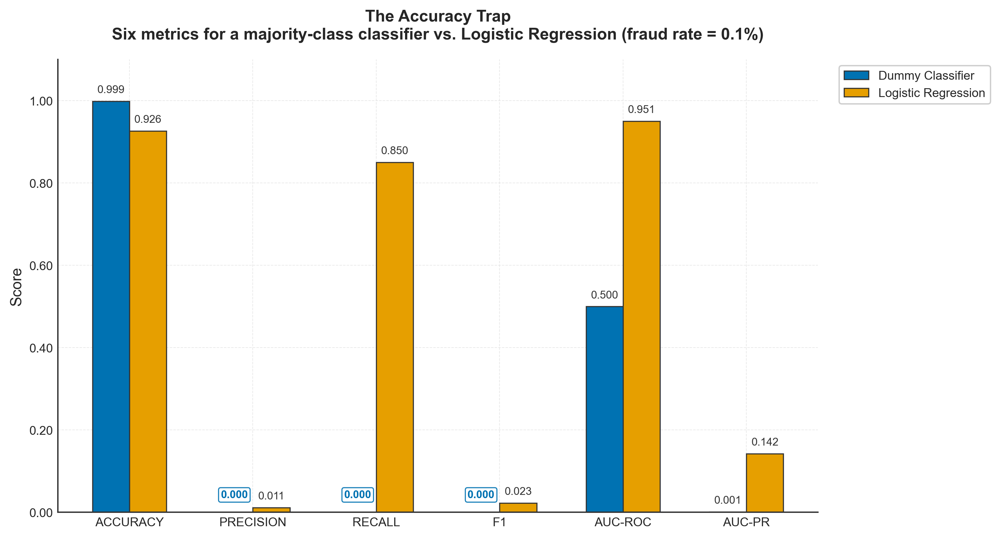
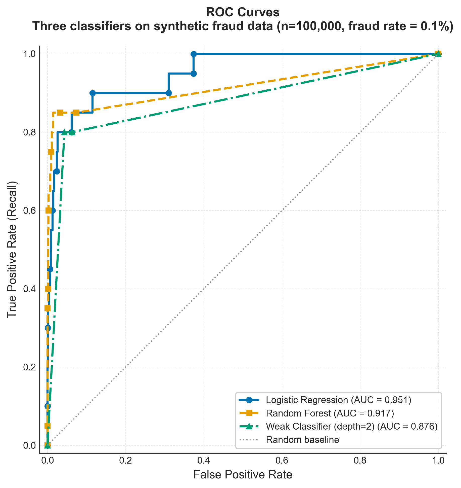
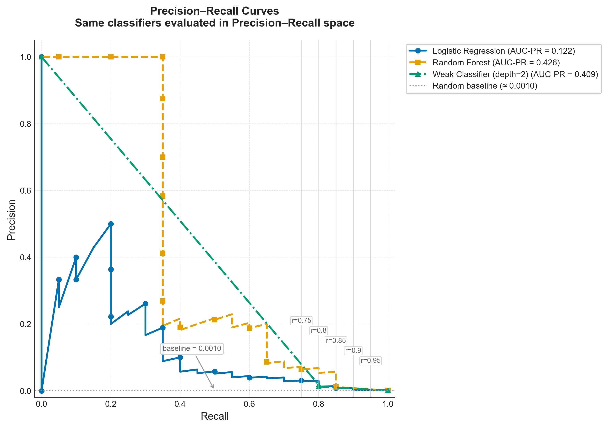
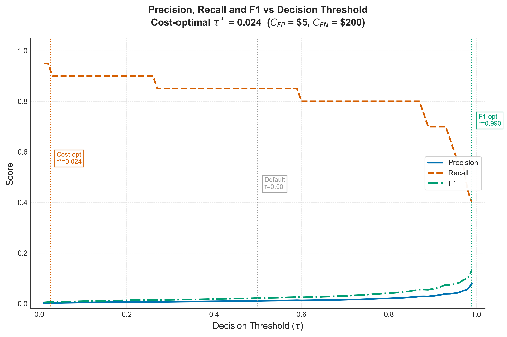
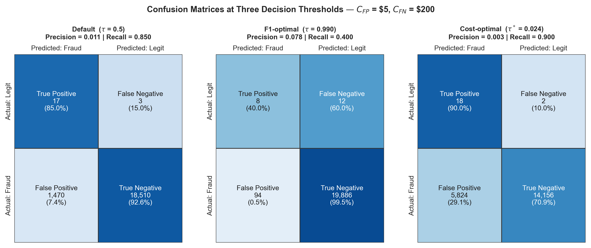
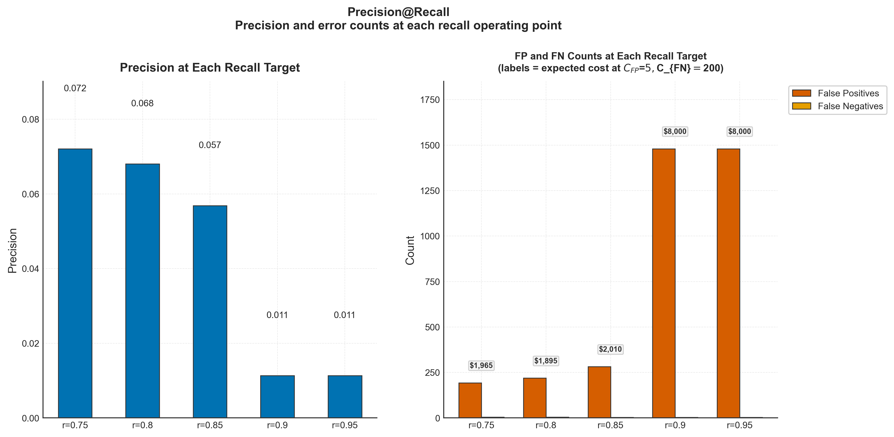
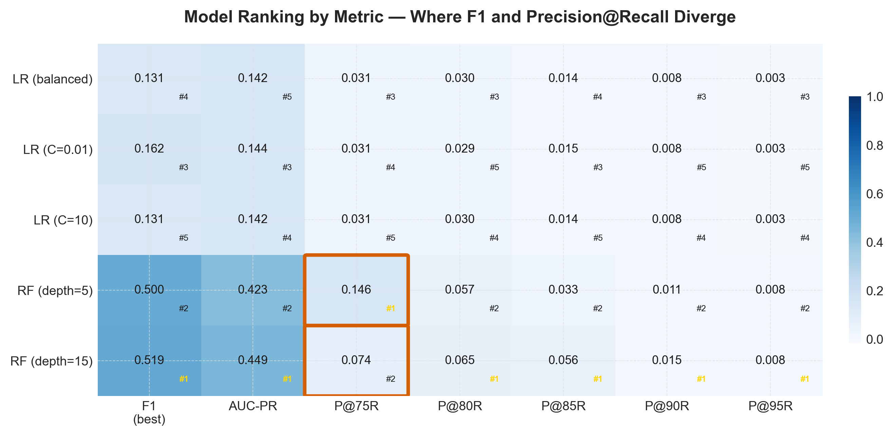

Not All Errors Cost the Same
What this is. Fraud detection is an imbalanced classification problem where the two errors are not symmetric: missing a fraud costs far more than blocking a legitimate transaction. Yet F1 — which weights both errors equally by construction — is the default metric in most workflows. This article makes that hidden assumption explicit, derives the metric the asymmetry actually calls for, and shows empirically that the choice of metric, not the choice of algorithm, decides which model gets deployed. It grew out of a technical interview where I picked a metric without being able to articulate why — the article is the reasoning I lacked at the time.
What you should know before reading. You use precision, recall, F1, and AUC-ROC in daily work. No prior Bayesian inference is assumed — the necessary conditional probability is built from scratch.
What you will take away. A decision procedure that maps a deployment context (class balance, a recall floor, known error costs) to the right metric, plus the vocabulary to defend that choice: Bayes' theorem, cost-sensitive decision theory, and the geometry of Precision-Recall curves.
Code. All experiments run on a synthetic imbalanced dataset and reproduce from the companion repository with fixed seeds.
Introduction
The motivation for this article emerged from a technical interview centered on a fraud detection case: at each stage of building a solution, I had to explain what to do, how to do it, and why. At one point came a seemingly simple question — among several evaluation metrics, which would you choose and why? My answer was based on what I knew at the time, but it lacked depth. The issue was not the choice itself; it was the absence of an explicit reasoning process. The metric selection was automatic, with no articulation of the assumptions being made. This article is that missing reasoning, built out in full.
The question is not whether F1 is a bad metric. It is whether F1 is an honest metric in a specific context: binary classification under severe class imbalance, where the two errors carry asymmetric costs. In fraud detection, a false negative — approving a fraudulent transaction — typically costs an order of magnitude more than a false positive — blocking a legitimate one. F1 weights these two error types equally by construction. That implicit assumption is rarely made explicit and, in practice, is rarely valid.
Every evaluation metric is a compressed answer to the question "what should the model optimise for?" Accuracy encodes: "every correct prediction counts equally." F1 encodes: "precision and recall matter equally, and I care about the minority class." Precision@Recall encodes: "I have a non-negotiable recall requirement, and I want the highest precision achievable within it." The central thesis is that in fraud detection, the last formulation is the honest one — and the machinery that justifies it is Bayes' theorem, cost-sensitive decision theory, and the geometry of Precision-Recall curves, built bottom-up.
Notation. $Y \in \lbrace 0, 1 \rbrace$ is the true label (1 = fraud), $\hat{Y}$ the model's prediction, $\pi = P(Y=1)$ the base rate, and $\tau$ the decision threshold.
The Confusion Matrix — A Probabilistic Reading
Most practitioners meet the confusion matrix as a 2×2 table of counts. Reframing it as a table of conditional probabilities is a small move that changes everything.
The four cells as events
Let $Y \in \lbrace 0, 1 \rbrace$ be the true label and $\hat{Y} \in \lbrace 0, 1 \rbrace$ the prediction. The four cells correspond to the four intersections of $\lbrace Y = 0, Y = 1 \rbrace \times \lbrace \hat{Y} = 0, \hat{Y} = 1 \rbrace$:
| Predicted: Fraud ($\hat{Y}=1$) | Predicted: Legitimate ($\hat{Y}=0$) | |
|---|---|---|
| Actual: Fraud ($Y=1$) | True Positive (TP) | False Negative (FN) |
| Actual: Legitimate ($Y=0$) | False Positive (FP) | True Negative (TN) |
Each count is proportional to a joint probability: $TP \propto P(Y=1 \cap \hat{Y}=1)$, and so on. Every standard metric is a conditional probability derived from these joint probabilities.
Precision as a posterior probability
Precision answers: "given that the model flagged a transaction as fraud, how likely is it to actually be fraud?"
$$P = \frac{TP}{TP + FP} = \frac{P(Y=1 \cap \hat{Y}=1)}{P(\hat{Y}=1)} = P(Y=1 \mid \hat{Y}=1)$$
In Bayesian language, Precision is the posterior probability of fraud given a positive prediction — the operator's question: when the alarm sounds, how often is it real?
Recall as a likelihood
Recall answers: "given that a transaction is actually fraudulent, how likely is it to be flagged?"
$$R = \frac{TP}{TP + FN} = \frac{P(Y=1 \cap \hat{Y}=1)}{P(Y=1)} = P(\hat{Y}=1 \mid Y=1)$$
Recall is the likelihood of a positive prediction given the true class is positive — the fraud team's question: of all the frauds, how many are we catching?
Why this framing matters
Precision and Recall condition on different things: Precision on the model's output, Recall on the ground truth. These are not symmetric quantities, and they cannot be combined into a single number without an explicit weighting decision — which F1 makes silently. A model with perfect Recall and zero Precision catches every fraud but flags every legitimate transaction; a model with perfect Precision and zero Recall is entirely selective but misses most frauds. The right balance depends on the cost of each error type — which the confusion matrix framing makes concrete: FN and FP measure different conditional failure modes and warrant different costs.
Bayes' Theorem and the Base Rate Problem
Knowing that Precision is $P(Y=1 \mid \hat{Y}=1)$ and Recall is $P(\hat{Y}=1 \mid Y=1)$ invites the question: how are they related? The answer is Bayes' theorem, and the bridge is the base rate — the prevalence of fraud.
The Bayesian derivation
$$P(Y=1 \mid \hat{Y}=1) = \frac{P(\hat{Y}=1 \mid Y=1) \cdot P(Y=1)}{P(\hat{Y}=1)}$$
Translating into the metric vocabulary with $\pi = P(Y=1)$ the base rate:
$$\text{Precision} = \frac{\text{Recall} \cdot \pi}{\text{Recall} \cdot \pi + (1 - \text{Specificity}) \cdot (1 - \pi)}$$
where Specificity $= P(\hat{Y}=0 \mid Y=0)$. This has a consequence that surprises many practitioners: even a high-recall model can have very low precision if the base rate $\pi$ is very small.
The base rate trap
Suppose a model has Recall = 0.90 and False Positive Rate = 0.01 — sounds excellent: catches 90% of frauds, wrongly flags only 1% of legitimate transactions. Apply the formula with a typical fraud base rate $\pi = 0.001$:
$$\text{Precision} = \frac{0.90 \times 0.001}{0.90 \times 0.001 + 0.01 \times 0.999} \approx 0.082$$
With only 8.2% precision, roughly 9 of every 10 flagged transactions are legitimate. Despite excellent Recall and a small False Positive Rate, nearly 92% of alerts are false alarms. This is not a failure of the model — it is a consequence of the base rate.
Class imbalance is a base rate problem
This reframes the "class imbalance problem". Imbalance is usually presented as a data problem requiring oversampling, undersampling, or synthetic data. Those may help during training, but they do not resolve the fundamental issue: when $\pi$ is very small, Recall and Precision have a structurally adversarial relationship. A model pushing for high Recall on a rare class will inevitably produce many False Positives relative to True Positives, because there are far more negatives to misclassify. This is not a bug in the pipeline — it is Bayes' theorem operating on the population's true class distribution. The right response in evaluation is not to pretend the imbalance does not exist (accuracy) or to average over both errors without acknowledging their costs (F1), but to incorporate the base rate and the asymmetric costs into the metric itself.
The Asymmetry of Errors
The previous section established that imbalance creates a structural tension between Precision and Recall. This section formalises what that tension costs, and derives the optimal decision threshold under asymmetric error costs.
The cost matrix
Every binary prediction system encodes costs for each cell. In fraud detection:
- True Positive: a fraud is flagged, investigated, blocked. Cost: investigation overhead, often small or offset by loss prevention.
- True Negative: a legitimate transaction is approved. Standard outcome. Cost: zero.
- False Negative: a fraud is approved. The loss (transaction amount, dispute handling, chargeback fees, reputational damage) falls on the institution.
- False Positive: a legitimate transaction is blocked. Immediate cost: lost revenue. Indirect cost: customer friction, account abandonment.
Concretely: if the average value at risk in a fraud is \$500 and the cost of a false alarm is \$15, then $C_{FN} \approx 500$ and $C_{FP} \approx 15$ — a ratio of roughly 33:1. These are illustrative; the exact values vary by institution. What matters for the derivation is the ratio $C_{FN} / C_{FP}$, not the absolute values. (The experiments use $C_{FN} = 200$ and $C_{FP} = 5$ — a 40:1 ratio.)
The optimal threshold
A probabilistic classifier produces a score $\hat{p}(x) = P(Y=1 \mid x)$; a threshold $\tau$ converts it into a decision: flag as fraud if $\hat{p}(x) \geq \tau$. The conventional choice $\tau = 0.5$ minimises expected cost only when the two errors cost the same — almost never true in fraud detection.
Compare the expected cost of each decision for a transaction with score $\hat{p}(x)$:
- Predicting fraud ($\hat{Y}=1$): $C_{FP} \cdot (1 - \hat{p}(x))$
- Predicting legitimate ($\hat{Y}=0$): $C_{FN} \cdot \hat{p}(x)$
Predict fraud when the first is smaller:
$$C_{FP} \cdot (1 - \hat{p}(x)) < C_{FN} \cdot \hat{p}(x) \;\Longrightarrow\; \hat{p}(x) > \frac{C_{FP}}{C_{FP} + C_{FN}} \equiv \tau^*$$
The optimal threshold is the ratio of the false-positive cost to the total error cost. With $C_{FN} = 500$ and $C_{FP} = 15$: $\tau^* \approx 0.029$. Flag any transaction with at least a 2.9% probability of fraud. The default of 0.5 would demand 50% posterior probability — astronomically conservative given a prior of 0.1%.
The default threshold encodes an implicit assumption
$\tau = 0.5$ is not neutral. It is optimal only when $C_{FP} = C_{FN}$. Using it where that is violated is equivalent to declaring that blocking a legitimate transaction and missing a fraud cost the same — a declaration no fraud team would endorse explicitly, but that many pipelines make by default. Once the optimal threshold is derived, the evaluation metric should reflect performance at and around $\tau^*$, not at the arbitrary $\tau = 0.5$.
F1 and the F-beta Family
F1 is the most widely used composite metric for imbalanced classification. This section derives it, states what it measures, and states its limits honestly.
The harmonic mean
The arithmetic mean weights each value linearly; the harmonic mean penalises extreme imbalance — if one value is very small, it is pulled strongly down:
$$F_1 = \frac{2 \cdot P \cdot R}{P + R} = \frac{2}{\frac{1}{P} + \frac{1}{R}}$$
This is exactly the harmonic mean of Precision and Recall. A model cannot score high by excelling at one and ignoring the other: $P = 0.99, R = 0.01$ gives $F_1 \approx 0.02$, not 0.50. In confusion-matrix counts:
$$F_1 = \frac{2 \cdot TP}{2 \cdot TP + FP + FN}$$
which makes the implicit weighting explicit: FP and FN are treated symmetrically, each contributing equally to the denominator.
What "equal weight" means
"Equal weight" sounds balanced. In cost terms it is not neutral: weighting Precision and Recall equally means penalising False Positives and False Negatives identically — which is another way of saying $C_{FP} = C_{FN}$, the same assumption embedded in $\tau = 0.5$. F1 is coherent with that threshold and that cost assumption. When they are violated — as in fraud detection — F1 provides a coherent answer to the wrong question.
The F-beta generalisation
F-beta introduces a parameter $\beta$ controlling the relative importance of Recall over Precision:
$$F_\beta = \frac{(1 + \beta^2) \cdot P \cdot R}{\beta^2 \cdot P + R}$$
$\beta = 1$ recovers F1; $\beta > 1$ weights Recall more (missing a positive is costlier); $\beta < 1$ weights Precision more. For fraud with $C_{FN} \gg C_{FP}$, values of $\beta$ in 2–5 are common. But the mapping from cost ratios to $\beta$ is not direct — $\beta$ controls metric weighting, not cost weighting — so Precision@Recall provides a more principled connection to the actual operational constraint.
An honest statement about F1
F1 is a useful summary: it avoids the accuracy trap on imbalanced data, penalises one-sided models, and gives a single number for comparison. Its limitation is that its implicit equal-cost assumption is rarely examined. Most practitioners who use F1 are not consciously endorsing equal costs; they are following a convention. The convention is fine when costs are similar. In fraud detection and similar high-asymmetry domains it is not — and the experiments show it changes model rankings.
The ROC Curve
The Receiver Operating Characteristic curve summarises classifier performance across all thresholds. Its geometry — and its limitations — set up the argument that follows.
Definition and AUC-ROC
As $\tau$ sweeps from 1 to 0, both the True Positive Rate (Recall) and the False Positive Rate change. The ROC curve plots $TPR(\tau)$ against $FPR(\tau)$:
$$TPR = \frac{TP}{TP + FN} = R \qquad FPR = \frac{FP}{FP + TN}$$
A random classifier traces the diagonal; a perfect one reaches $(0,1)$. The Area Under the ROC Curve has a clean probabilistic reading: the probability that the model scores a randomly chosen positive above a randomly chosen negative. 0.5 = random ranking; 1.0 = perfect discrimination.
Historical origin
ROC analysis originated not in machine learning but in Signal Detection Theory, developed during World War II to evaluate radar operators: how often does an operator correctly detect an aircraft (TPR) versus report a false alarm (FPR)? The context is instructive — the operator faced the same asymmetric-cost problem, and the theory already established that the optimal operating point on the ROC curve depends on costs and the base rate, the same quantities derived above.
A critical caveat: ROC and class imbalance
Despite its elegance, AUC-ROC has a documented weakness on imbalanced data. The False Positive Rate is normalised by the number of negatives. When negatives overwhelmingly dominate (as in fraud), even a large absolute number of false positives produces a small FPR. Classifiers with substantially different precision profiles — and therefore different real-world costs — can appear indistinguishable on a ROC curve. The next section shows the Precision-Recall curve, which has no such masking property.
The Precision-Recall Curve
The Precision-Recall curve plots Precision against Recall as $\tau$ varies. With no FPR term, it stays fully sensitive to false-positive performance even when the negative class dominates.
Definition and AUC-PR
A random classifier on a dataset with base rate $\pi$ produces a flat PR curve at height $\pi$: random predictions yield True Positives proportional to the base rate regardless of threshold. So the AUC-PR baseline is approximately $\pi$. For fraud with $\pi = 0.001$, a random classifier scores AUC-PR $\approx 0.001$; a useful model must beat that substantially. For ROC, by contrast, the random baseline is always 0.5 regardless of base rate — which makes it harder to see whether a model is doing anything useful.
Why PR curves are more informative here
Davis and Goadrich (2006) proved a formal relationship: a model that dominates another in ROC space also dominates in PR space, but the converse fails. Models can be separated in PR space that appear identical in ROC space — precisely in the imbalanced regime, where the ROC's FPR axis compresses the distinction between classifiers that differ meaningfully in precision.
The trade-off shape
As Recall increases (lower $\tau$, catch more frauds), Precision typically decreases (more false alarms). The PR curve is the trade-off frontier. A concave curve means the model can be operated at multiple points by adjusting $\tau$; the business choice — how much precision to sacrifice for a given recall — belongs to the stakeholder, and the PR curve provides the information to make it explicitly. This sets up the final metric.
Precision@Recall — Pinning the Operating Point
Precision@Recall is where the probabilistic machinery, the metric landscape, and the business reality of fraud detection converge.
Formal definition
Given a recall target $r \in (0, 1)$:
$$P\text{@}r = P(\tau_r) \quad \text{where} \quad \tau_r = \arg\min_\tau \lvert R(\tau) - r \rvert$$
In words: find the threshold that achieves recall $r$, then report the precision there — the Precision coordinate where the PR curve crosses the line $R = r$.
r is chosen, not fixed
$r$ is not a technical parameter — it is a business decision encoding "what fraction of frauds are we willing to miss?" An aggressive retail bank might set $r = 0.90$; a higher-friction environment $r = 0.95$ or $0.99$; a context where false positives are very costly might accept $r = 0.70$ to preserve precision. The decision is made by the business, not the algorithm. The data scientist provides the PR curve (the frontier) and computes Precision@$r$ at the stakeholder-defined $r$. This separation — the model provides the frontier, the business chooses the operating point — is the most honest interface between machine learning and deployment.
Connection to cost-sensitive decision theory
Precision@Recall connects directly to the optimal threshold. Recall that $\tau^* = C_{FP} / (C_{FP} + C_{FN})$. The recall achieved there, $r^* = R(\tau^*)$, is the cost-optimal operating recall, and $P\text{@}r^*$ is the precision the model achieves at that economically justified point — a more complete description of performance than any single summary over all thresholds.
F1 versus Precision@Recall
F1 is an unconstrained optimisation: it finds the threshold maximising the harmonic mean, which may or may not coincide with the business's required operating point. Precision@$r$ is a constrained formulation: it fixes the recall requirement and maximises precision subject to it — the correct formulation when the recall floor is non-negotiable (regulatory or contractual minimums). The distinction matters for ranking: Experiment E shows that ranking by F1 and by Precision@$r$ can produce different winners. When a recall floor is fixed, Precision@$r$ is the honest metric; F1 is not wrong, but it answers a different question.
Experiments
All experiments run on a synthetic imbalanced dataset ($n = 100{,}000$; 20 features, 5 informative; fraud rate 0.1%), with an 80/20 stratified train/test split, fixed seeds, and metrics reported on the held-out test set. Each follows the standard template — Claim, Setup, Result, Connection.
Experiment A — The Accuracy Trap
Claim. On a severely imbalanced dataset, a degenerate always-negative classifier achieves very high accuracy but zero recall, so accuracy is an invalid metric here.
Setup. A DummyClassifier (always predicts the majority class) and a LogisticRegression are evaluated on six metrics: Accuracy, Precision, Recall, F1, AUC-ROC, AUC-PR.
Result. The DummyClassifier scores Accuracy $\approx 1 - \pi \approx 0.999$ while Precision, Recall, and F1 are all zero; its AUC-ROC is 0.500 (random) and AUC-PR 0.001 (the base rate). LogisticRegression accepts lower accuracy (0.926) in exchange for meaningful Recall (0.850) and AUC-PR (0.142), two orders of magnitude above baseline.
Connection. The DummyClassifier exploits the base rate problem: its accuracy equals $1-\pi$. F1 correctly flags it as useless because it conditions on the positive class, which accuracy does not. AUC-PR gives the most honest single number.

Experiment B — ROC vs Precision-Recall
Claim. In the imbalanced regime, models that look similar in ROC space are revealed as substantially different in PR space — and the ranking itself can invert.
Setup. Three models — LogisticRegression, RandomForestClassifier, and a weak DecisionTreeClassifier (depth 2) — evaluated with both ROC and PR curves.
Result. The two spaces produce opposite rankings. In ROC space Logistic Regression leads (AUC-ROC 0.951); in PR space it is weakest (AUC-PR 0.122), while Random Forest leads (0.426). The inversion occurs because the linear model struggles with the non-linear boundary from the reduced feature set, yet its discrimination across the full score distribution (what ROC measures) stays strong; the PR curve, sensitive to precision at the relevant operating range, exposes the weakness.
Connection. A stronger-than-expected confirmation of the ROC caveat: the FPR axis normalises false positives by the ~99,900 negatives, so a large absolute increase in false positives — which drives precision down — barely moves FPR.


Experiment C — Threshold Selection
Claim. The default $\tau = 0.5$ is rarely optimal under asymmetric costs; the cost-optimal $\tau^*$ shifts the operating point toward higher Recall, reducing expected cost.
Setup. A LogisticRegression evaluated at three thresholds — default (0.5), F1-optimal (grid search), and cost-optimal $\tau^* = C_{FP}/(C_{FP}+C_{FN})$ with $C_{FP}=\$5$, $C_{FN}=\$200$ — via a threshold sweep and confusion matrices.
Result. The three produce qualitatively different confusion matrices. At $\tau=0.5$: Recall 0.850 but Precision 0.011 (1,470 false positives). At the F1-optimal $\tau=0.990$: false positives drop to 94 but Recall falls to 0.400, missing most frauds. At $\tau^*=0.024$: Recall rises to 0.900 with 5,824 false positives — the correct trade-off when each missed fraud costs 40× a false alarm. The F1-optimal threshold sitting at 0.990 is not an error: under extreme imbalance most scores are near zero, and the harmonic mean peaks only when the threshold is high enough to cut false positives.
Connection. A direct confirmation that the default threshold encodes $C_{FP}=C_{FN}$, which is false here; the gap between F1-optimal (0.990) and cost-optimal (0.024) shows how far the F1 criterion diverges from the economically justified operating point.


Experiment D — Precision@Recall at Business Targets
Claim. Different business contexts imply different recall requirements, and the precision achievable at each is a model property with direct financial consequences.
Setup. The RandomForestClassifier (best by AUC-PR in Experiment B) evaluated at five recall targets $r \in \lbrace 0.75, 0.80, 0.85, 0.90, 0.95 \rbrace$; Precision, false-positive and false-negative counts, and expected cost ($C_{FP}=\$5$, $C_{FN}=\$200$) computed at each.
Result. Precision declines steadily from $r=0.75$ (0.072) to $r=0.85$ (0.057), then drops sharply at $r=0.90$ (0.008) as the model exhausts its high-confidence positives. The cost curve has an inflection: below $r=0.85$, total expected cost is about \$2,000; above $r=0.90$ it jumps to \$8,000. The business decision between 85% and 90% recall carries a 4× cost impact — invisible in a summary like AUC-PR.
Connection. Operationalises the idea that $r$ is a business decision and Precision@$r$ is the metric reflecting model quality at that decision point; the cost annotations tie confusion-matrix counts to money.

Experiment E — Metric Choice Changes Model Rankings
Claim. Ranking models by F1 and by Precision@$r$ can produce different orderings; when a recall floor is fixed, the F1-based ranking may recommend the wrong model.
Setup. Five variants — three Logistic Regression configs and two Random Forest configs — ranked by seven metrics: best-achievable F1, AUC-PR, and Precision@$r$ for the five recall targets, shown as an annotated heatmap with per-cell ranks.
Result. The ranking diverges at the P@75R column. RF (depth 15) is best by F1 (0.519) and AUC-PR (0.449), but RF (depth 5) delivers nearly twice the precision at 75% recall (0.146 vs 0.074). If the business requires at least 75% of frauds caught, the F1-recommended model would produce roughly twice as many false alarms as the P@75R-recommended one. The divergence occurs between the two best models, not weak ones — it is information, not noise.
Connection. The empirical core of the thesis: F1 and Precision@Recall answer different questions, and when the answers differ, the choice of metric — same models, same data, same split — determines which model gets deployed.

A Framework for Choosing the Right Metric
The theory established the foundations; the experiments provided the evidence. This section synthesises a decision procedure.
The decision table
| Question | Answer | Recommended metric |
|---|---|---|
| Are class distributions balanced? | Yes | Accuracy, F1 |
| Are class distributions balanced? | No | Continue below |
| Is a business recall floor defined? | Yes | Precision@r, AUC-PR |
| Is a business recall floor defined? | No | AUC-PR, F1 |
| Are error costs explicitly estimated? | Yes | Cost-optimal threshold + Precision@r* |
| Are error costs explicitly estimated? | No | AUC-PR (ranking); F1 at F1-optimal threshold |
| Is model ranking the goal (no fixed threshold)? | Yes | AUC-PR |
| Is threshold selection the goal? | Yes | PR curve + cost-optimal threshold |
Recommendations for fraud detection
Given severe imbalance, asymmetric costs, and a commercial or regulatory minimum recall:
- During development: rank models by AUC-PR — a threshold-free comparison sensitive to the positive class.
- During threshold selection: compute $\tau^* = C_{FP} / (C_{FP} + C_{FN})$ from the institution's cost estimates.
- For deployment evaluation: report Precision@$r$ at the business recall floor — the number that answers "at the required detection rate, what fraction of our alerts are real frauds?"
- For stakeholders: express results in FP and FN counts and their costs, not percentages alone. "At 90% recall, ~47 false alarms per day at a combined investigation cost of \$X" beats "P@90R = 0.15".
Common mistakes
- Accuracy on imbalanced data. Always check whether a DummyClassifier would score competitively before trusting accuracy.
- AUC-ROC as the primary metric. It can mask large precision differences; use AUC-PR as the primary ranking metric.
- Evaluating at $\tau = 0.5$. Optimal only under symmetric costs and $\pi = 0.5$; in fraud it typically yields near-zero recall. Always report which threshold was used and why.
- Choosing a metric without a stated requirement. F1 is a reasonable default only when no other information is available; a known recall floor calls for Precision@$r$, known costs for cost-optimal threshold analysis.
The closing principle
The right metric is a business decision encoded in mathematics. Every metric encodes assumptions about costs, class distributions, and operating requirements. Making those assumptions explicit — rather than inheriting them from convention — is the most important practice a practitioner can adopt. The tools are not exotic: Bayes' theorem, conditional probability, and a cost matrix. The assembly was the point.
Limitations
- Static snapshot. The experiments run on a fixed dataset. Production fraud detection faces concept drift, label delay (chargebacks arrive weeks later), and adversarial feedback loops; the metric framework is correct for the static case, and extending it to the dynamic case is a richer problem.
- Calibration assumed. The cost-optimal threshold derivation depends entirely on $\hat{p}(x)$ being a well-calibrated posterior. A miscalibrated score makes $\tau^*$ wrong even when the ranking is good; calibration is the natural next layer.
- Synthetic data. The synthetic design buys control over the number of informative features, base rate, and separation — at the cost of the messiness of real transaction data (mixed types, missingness, engineered features).
- Symmetric cost model. A single $C_{FN}/C_{FP}$ ratio is assumed constant across transactions. In reality the cost of a missed fraud scales with the transaction amount, which a per-transaction cost model would capture.
Conclusion
This article started from a concrete question — why F1 in fraud detection? — and traced its answer through four linked bodies of knowledge. Conditional probability revealed that Precision and Recall measure qualitatively different things, so combining them requires an explicit weighting. Bayes' theorem connected the base rate to the Precision-Recall tension, showing that imbalance is a base rate problem and any metric ignoring it cannot characterise performance. Cost-sensitive decision theory derived the optimal threshold, showing $\tau = 0.5$ is the special case where the two errors cost the same. The metric landscape — ROC, PR, and Precision@Recall — mapped the choices and showed empirically that metric choice changes rankings and deployment decisions.
Applied when the conditions are met: never use accuracy under severe imbalance; prefer AUC-PR to AUC-ROC for threshold-free comparison; evaluate with Precision@$r$ when a recall floor is defined; derive and evaluate at the cost-optimal threshold when costs are known; translate results into FP/FN counts and costs for stakeholders; and, when choosing between two models, ask which metric best represents the deployment context before consulting the leaderboard.
The natural extension is dynamic and sequential settings — fraud streams with non-stationary distributions, where the base rate drifts and the optimal threshold must be recalibrated. The Bayesian framework developed here extends naturally to online learning; the next iteration adds calibration, since the cost-optimal threshold depends entirely on $\hat{p}(x)$ being a trustworthy posterior.
References
- Davis, J. & Goadrich, M. (2006). The relationship between Precision-Recall and ROC curves. Proceedings of the 23rd International Conference on Machine Learning (ICML), 233–240. doi:10.1145/1143844.1143874
- Fawcett, T. (2006). An introduction to ROC analysis. Pattern Recognition Letters, 27(8), 861–874. doi:10.1016/j.patrec.2005.10.010
- Green, D. M. & Swets, J. A. (1966). Signal Detection Theory and Psychophysics. Wiley.
- Hastie, T., Tibshirani, R. & Friedman, J. (2009). The Elements of Statistical Learning (2nd ed.). Springer.
- Saito, T. & Rehmsmeier, M. (2015). The Precision-Recall plot is more informative than the ROC plot when evaluating binary classifiers on imbalanced datasets. PLOS ONE, 10(3), e0118432. doi:10.1371/journal.pone.0118432
- Dal Pozzolo, A., Caelen, O., Johnson, R. A. & Bontempi, G. (2015). Calibrating probability with undersampling for unbalanced classification. IEEE Symposium Series on Computational Intelligence, 159–166. doi:10.1109/SSCI.2015.33
All figures and numbers in this article are reproduced by versioned scripts with fixed seeds in the companion repository. The synthetic dataset is generated with full control over the base rate, informative features, and class separation; the ULB Credit Card Fraud dataset (Kaggle) is the canonical real-world reference for the same problem.